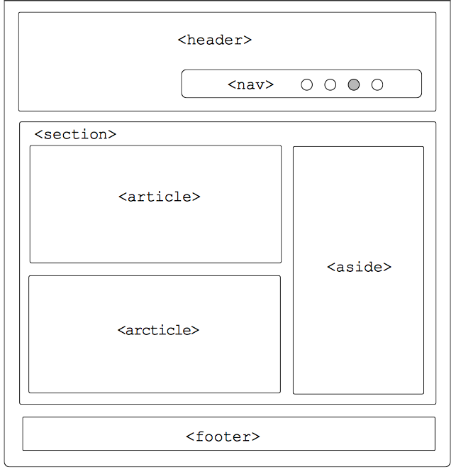
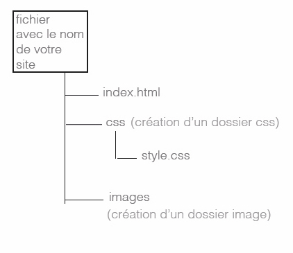

Comme son nom l’indique, le HTML, ou « HyperText Markup Language », est un langage permettant de réaliser des pages web.
Tout site internet a besoin de HTML pour s’afficher. Lorsque l’on crée un site web ,nous allons avoir besoin d'utiliser du HTML.
Définition : HyperText Markup Language (HTML) est un langage de “mark up (balisage)” qui définit la structure logique d’un document WWW diffusé sur le Web.
La dérive HTML :
Conçu comme un langage de structuration logique du contenu.
Elle est utilisé comme langage de présentation et de mise en page.
A quoi cela sert?
Il permet de faire des documents HTML qui pourront être lu, chargé par des navigateur, ce qui veut dire que si vos pages sont sur un serveur, elles seront accessibles sur le www : (Worl Wide Web) via un client Web (browser). Ainsi quiconque
ayant un accès au Web et connaissant l'adresse de vos pages pourra les browser.
Ce language vous permet donc de créer des documents HTML dans lesquels vous pourrez mettre ce que vous voudrez à condition de respecter le principe des différents synthaxe HTML.
Structure base HTML
Le document HTML commence toujours par ce que nous appelons la structure de base. Cette structure est obligatoire et constant.
ex.:
Il est possible de comprendre le document HTML de manière très simple, grâce à une division des blocs, selon la structure suivante:
Définition du document (!DOCTYPE)
meta
head
body
Définition du document (!DOCTYPE)
Le doctype n'est pas une balise HTML, mais une déclaration pour le navigateur et les autres programmes qui peuvent lire votre site.
ATTENTION Le doctype est OBLIGATOIRE et doit toujours être la PREMIERE LIGNE de votre document.
META
Les balises Meta servent à décrire le contenu de votre site aux moteurs de recherche, c’est dans ces balises que nous entrerons les mots-clés qui faciliteront la vie des utilisateurs dans la recherche du site.
Par exemple : Grâce à eux, vous pouvez également "signer" votre site pour déclarer que vous en êtes l’auteur.
HEAD
Contient des informations qui ne sont pas transposées de manière transparente à l'utilisateur ou lecteur du document. Ce sont des données implicites. En pratique, tout le contenu de l'en-tête est délimité dans la balise head.
BODY
C'est le document lui-même, c'est-à-dire l'information lisible par l'utilisateur / lecteur du document. C'est tout le texte que l'on souhaite présenter, ainsi que toutes les formes de médias sortants. De plus, toute présentation de saisie
de données (formulaires) s'applique également dans cette section du document.
En pratique, le corps du document est délimité par la paire de balises
< body> et
</ body>.
Balise structurante
Les balises structurantes permets de structurer votre page web et votre code, comme vous pouvez le voir dans le schéma ci-dessous.

La balise header, est pour l’en tête avec la balise nav, qui veux dire navigation, à l’intérieur il y aura le menu.
Ensuite nous avons la balise section celle la permet de regrouper des contenus de même thème.
Pour la balise article, elle regroupe des éléments indépendant. Exemple pour des articles de journaux.
La balise inside sert a mettre des informations complémentaires, il se situe souvent à droite de la page.
Pour finir le footer est le pied de page, on y trouve souvent les liens contact, nom, mentions légales.
Il y a aussi des balises pour structurer votre contenu:
h1: pour le titre principal.
h2: les sous titres.
h3: etc, ...
p: pour les paragraphes.
ul, li: pour crée une liste, exemple pour les menus.
<article>
<h1>Titre principal</h1>
<h2>Sous titre</h2>
<p>paragraphe</p>
<ul>
<li>liste</li>
<li>liste</li>
</ul>
<img src="">
Ensuite voici la balise image pour mettre des images sur votre site:
src= le lien de votre image, “ votre image“ exemple: “images/nomimage.jpg/png“
Création de fichier HTML
Pour mettre en forme un dossier avec les fichiers html et css
En premier il faut crée un dossier vide avec comme nom (le nom de son site).
Ensuite à l’intérieur de ce dossier créée deux dossiers différents, l’un ce nommant CSS et IMAGES.
Pour continuer enregistré votre fichier html (que vous avez crée dans un logiciel comme atom ou sublime text) dans le dossier avec comme nom votre site, enregistrer le sous le nom de index.html.
Ensuite pour le fichier css, enregistrer le dans le dossier css sous le nom de style.css.
Et mettre vos images dans le dossier images.
html et css
(suit le cheminement de votre dossier)
Pour une image :

(suit le cheminement de votre dossier)
Les balises de type block et inline
Les balises inline : c'est le cas par exemple des liens <a></a>.
Les balises block : c'est le cas par exemple des paragraphes
<p></p>.
Mais comment je reconnais une balise inline d'une balise block ?
C'est en fait assez facile :
block: une balise de type block sur votre page web crée automatiquement un retour à la ligne avant et après.
Il suffit d'imaginer tout simplement un bloc. Votre page web sera en fait constituée d'une série de blocs les uns à la suite des autres.
Mais vous verrez qu'en plus, il est possible de mettre un bloc à l'intérieur d'un autre, ce qui va augmenter considérablement nos possibilités pour créer le design de notre site !
inline: une balise de type inline se trouve obligatoirement à l'intérieur d'une balise block. Une balise inline ne crée pas de retour à la ligne, le texte qui se trouve à l'intérieur s'écrit donc à la suite du texte précédent,
sur la même ligne (c'est pour cela que l'on parle de balise « en ligne »).
Afin de mieux vous aider à assimiler quelles balises sont inline et quelles balises sont block, voici un petit tableau dressant la liste de quelques balises courantes.
Les balises de type block
<p>
<em>
<footer>
<strong>
...
Et les balises de type inline
<h1>
<mark>
<h2>
<a>
<article>
...
BEM
BEM est l'acronyme de Modificateur d'élément de bloc (Block Element Modifier ) qui consiste en un modèle qui permet de nommer des classes d'éléments HTML.
Cette méthode nous aide à travailler de manière plus efficace, plus rapide et plus claire, en soutenant tous ceux qui sont impliqués dans le projet en question et ceux qui peuvent venir s'intégrer ou simplement «aider» dans le processus.
Blocs
L'un des principes de la Méthodologie BEM recommande l'indépendance des blocs afin de faciliter la maintenance, car il se peut qu'à l'avenir vous deviez déplacer, ajouter ou supprimer des blocs. L'indépendance des blocs facilitera certainement
ces tâches. En bref, nous nommons la classe d'un bloc avec un nom qui l'identifie. Par exemple :
HTML
<div class="block"></div>
CSS
.block { }
Éléments
Un élément est une sorte de "pièce" du bloc, un menu est un élément d'un Bloc header. La méthodologie BEM suggère que les classes de noms soient formées de sorte que le nom du bloc vienne en premier, juste après le nom de l'élément et qu'ils
soient séparés par deux traits de soulignement (__).
Nous utilisons les modificateurs pour changer les styles d'un élément spécifique.
La méthodologie BEM recommande que si un modificateur doit être créé, il doit être écrit en syntaxe en utilisant deux traits d'union (-) après le nom de l'élément ou du bloc à modifier.